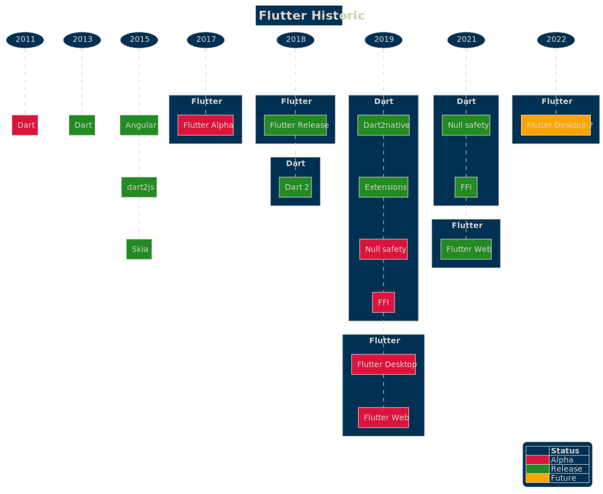

Un peu d'histoire

Dart fut créé par Lars Bak et Kasper Lund en 2011, tous deux ingénieurs travaillant chez Google. Le langage reçu un accueil mitigé de la part de la communauté web. Google proposa d’inclure la Dart Virtual Machine dans chrome et par là même, de supprimer à terme le javascript.
Comme on pouvait s’y attendre, la communauté perçue Dart comme un langage imposé par Google et pouvant nuire à l’aspect libre et communautaire du web.
Entre autres, cela allait conduire à une fragmentation de l’écosystème.
La première version de Dart voit le jour en 2013.
Jusqu’en 2015, Google utilise Dart pour ses projets internes et l’adoption du langage par la communauté reste faible. En parallèle, les équipes de Google travaillent sur la deuxième version d’Angular complètement écrite en Dart et l’utilisent sur des projets internes aujourd’hui toujours en production comme Google Ads, Google Absence, Google Fiber, Google Play Console ...
En 2015, les équipes de développement de Dart sortent alors la version 1.9 du langage qui apporte le support de la transpilation vers javascript ainsi que la première version d’Angular Dart. La version typescript d’Angular sortira un an plus tard et l’adoption par la communauté fut un succès.
En parallèle, lors d’un Dart Developer Submit, Éric Seidel de chez Google présente 1 Sky une ébauche du moteur graphique aujourd’hui connu sous le nom de Skia 2 (utilisé sous Android, Google Chrome, Firefox, Fuchsia 3). Éric présente une démonstration codée en Dart qui tourne sur un mobile android ou iOS en 120 fps. Il présente la notion de widget et de hot-reload.
C’est la première apparition de Flutter.
En 2017, sort la première version alpha de Flutter. Google fait intervenir les équipes de développement de Chromium sur le projet. Un des prérequis pour cette équipe, est de procéder à une mise à jour majeure du langage : Dart 2.0. Ce dernier apporte un système de typage renforcé, nécessaire pour pouvoir compiler dart vers un environnement natif.
La version définitive de Flutter sort en 2018. L’engouement autour de ce dernier est réel.
La communauté de développeur Flutter est issue d’un écosystème assez varié : Kotlin / Swift / Javascript / Typescript. Le langage ayant assez peu évolué depuis sa première version (en dehors des aspects techniques), et la communauté grandissante, des demandes d’évolution du langage sont fréquentes.
En 2019, Dart supporte désormais les extensions issues de Kotlin, et de nombreuses fonctionnalités expérimentales font leurs apparitions comme Null Safety, Dart FFI (Dart Foreign Function Interface) et gRPC (Google Remote Procedure Call).
À cela s’ajoute l’apparition de dart2native permettant de générer des exécutables sur des plateformes desktop. Google annonce alors l’arrivée de Flutter Desktop et Flutter Web.
Nécessitant un travail titanesque, les fonctionnalités de Null Safety et Dart FFI sont disponibles en version définitive courant 2021.